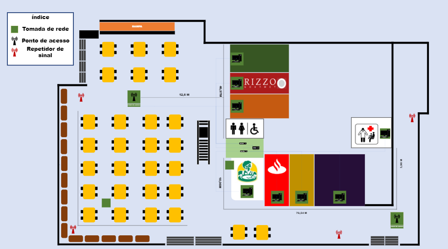

Atividade Final
No 1º bimestre de 2023, tivemos o primeiro contato com a programação por meio do "Scratch", uma plataforma de programação onde a aprendizagem é mais simples e acessível. Com isso, tivemos como tarefa final assumir o papel de uma empresa cujo objetivo era desenvolver um jogo dentro da plataforma, abordando os conceitos da área de ciências da natureza. O resultado entregue está logo abaixo:
Confira o resultado do jogo feito. INSTRUÇÕES: Neste jogo, você está em um ambiente que sofreu uma explosão nuclear e precisa coletar itens para conseguir escapar. Entretanto, alguns itens apresentados no ambiente vão tirar a vida do seu personagem aos poucos, então você precisa tomar cuidado para não ser atingido(a) por eles. Para se movimentar no jogo, use as teclas direita e esquerda do seu teclado. Você pode correr e usar sua agilidade para se desviar dos obstáculos e recolher os itens necessários para sua fuga.
Infraestrutura de redes
Esse foi um trabalho de 2022, o principal objetivo era relacionar os conhecimentos que tínhamos obtido ao longo do bimestre e baseado nisto elaborar um projeto de infraestrutura de redes para alguns locais do Senac. Foi necessário medir todo o entorno da praça de alimentação 1, que foi o local que meu grupo ficou responsável. Após as medidas obtidas, definimos onde ficaria a sala de equipamentos por onde sairia todo o cabeamento. Também definimos os pontos de acesso que ficariam espalhados na praça e por onde passariam os cabos. Confira a planta do projeto abaixo:

Confira também a lista de material e custo total feita para a realização do projeto inicial:
Planilha de gastos e equipamentos
Simulador Intel
Para iniciar os nossos estudos sobre resolução de problemas hardware, utilizamos no 1º ano o simulador de defeitos da Intel que nos permite simular defeitos reais que ocorrem no computador e com base nisso escolhemos a ferramenta que iremos usar para solucionar o problema. Confira o relatório feito sobre o trabalho:
Relatório final
Monte seu Servidor
Em 2022, tivemos o desafio de montar nosso primeiro servidor, com base nas poucas aulas que tivemos antes deveríamos escolher as peças que melhor se adequasse ao perfil do nosso usuário. Veja o resultado abaixo:


Cálculo de Sub-rede
Ainda em 2022, no 2º ano aprendemos a fazer o cálculo de sub-rede, conforme fomos aprendendo, criamos um arquivo Excel para facilitar as contas durante as aulas. As planilhas você pode conferir clicando no botão abaixo:
Planilha cálculo de sub-rede